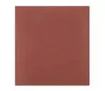

Lixa para parede 120 norton
Preço: R$ 1,10
Descrição do produtoLixa para parede 120 norton é uma ótima opção para quem busa deixar o acabamento preciso e
eficiência em superfícies como alvenaria, gesso e massa corrida
Preço: R$ 1,10
Descrição do produtoLixa para parede 120 norton é uma ótima opção para quem busa deixar o acabamento preciso e
eficiência em superfícies como alvenaria, gesso e massa corrida
Mais características: